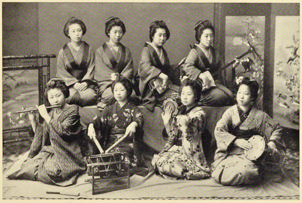

“An orchestra for geisha dancing”
Japan: Described and Illustrated by the Japanese (1897)
Some Japanese musicians were present, and played on the Koto and Samisen, instruments rather like the zither and banjo in appearance. They also sang several songs to us; but, with all due deference to their skill, it must be confessed that it evidently requires a Japanese ear to appreciate Japanese music.
Japan As We Saw It (Bickersteth) (1893)
Of their own primitive music the Japanese are very fond. Professional musicians and dancers form quite a numerous class, and are in constant request for private parties. They consist largely of young women remarkable for their personal attractions; but men and women of all ages, including, as with us, many blind people, gain their livelihood as singers and instrumentalists. Among their instruments, our harp, guitar, violin, fife, clarionet, drum, etc., have their counterparts; and, if their music does not always give us pleasure, we must at least admit that not a little skill is often shown in its execution.
The Land of the Morning (1882)
Went with some American friends to a musical entertainment, at the house of the Governor of Yokohama. On our arrival, we were met at the door by the lady of the house, a very pretty little person with a sweet, gentle voice and manner. As neither she nor her husband can speak English, conversation was carried on under difficulties, Mr L. acting as interpreter.
We were taken up two steep flights of stairs into an upper chamber, which was furnished like a European room with carpet and chairs, the walls hung with English pictures, including prints of the Queen and Prince Consort.
Presently the three musicians arrived, and took their places on the floor in the middle of the room. The principal instrument called the “Kioto” is about five feet long, and has about a dozen strings—the two others are respectively like a primitive guitar, and violin.
Having tuned, or rather untuned their instruments, the performance began, the musicians accompanying themselves in a low monotonous whine through their noses. They played four long pieces, in not one of which was it possible to detect the smallest attempt at any air, but the Kioto produced some very sweet notes. The general effect was extremely monotonous, and calculated to have a very soporific effect, as was proved by one of the party falling fast asleep in his chair—an example which, after a long ride, I had some difficulty in not following.
Letters from China & Japan (1875)
At one end of the large [Exposition] building [in Ueno Park], a military band of about fifty performers, all of them natives, were playing a selection from L’Africaine, in excellent style. The Japanese crowded about the music pavilion, listening intently, as it seemed, although I could not help wondering whether they think the Western music equal to the caterwaulish strains of their own gaishas, and the tum-tum accompaniment of the samisen or koto. I have asked several Japanese gentlemen who, while pursuing their studies in Europe or America, cultivated a taste for what nous autres call music, to enlighten me on this point. In every instance, they told me that, while they prefer “European” music, they are nevertheless swayed by the spell of their own national melodies and the words to which they are set. I can easily believe that part of it, but how they can enjoy both kinds passes my understanding.
Jottings of Travel in China and Japan (1888)
◀ TheaterPerforming arts ▶